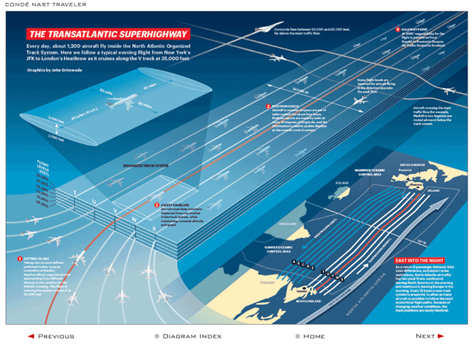
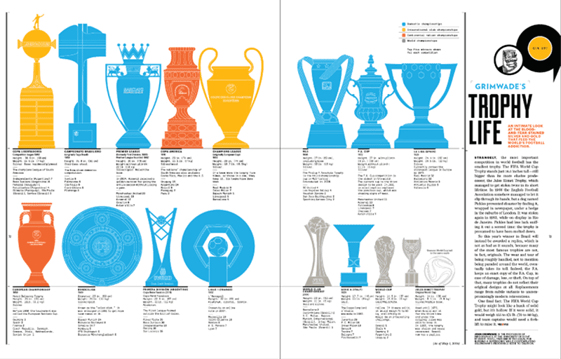
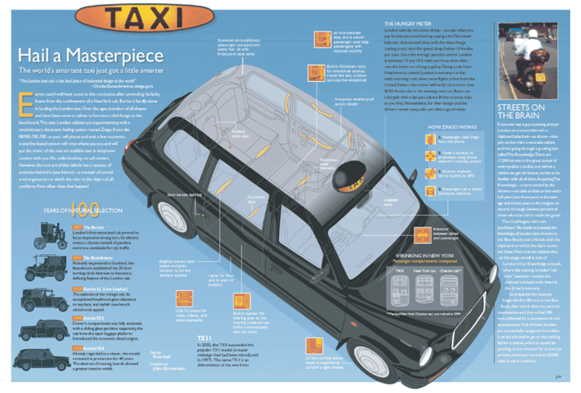
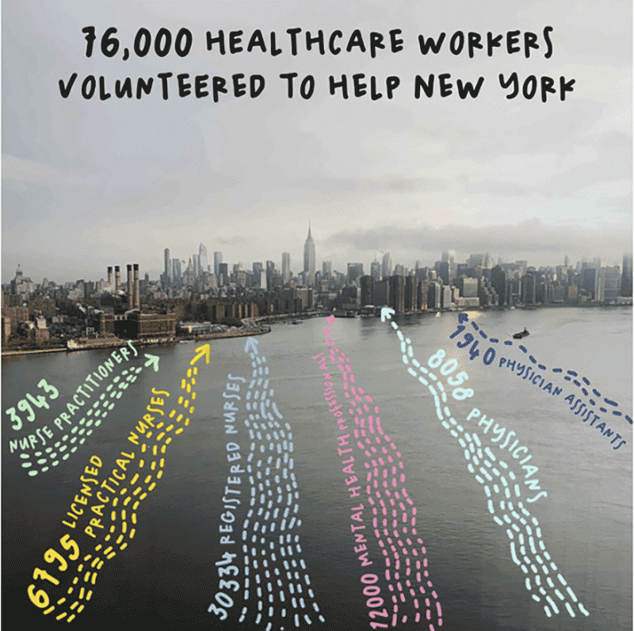
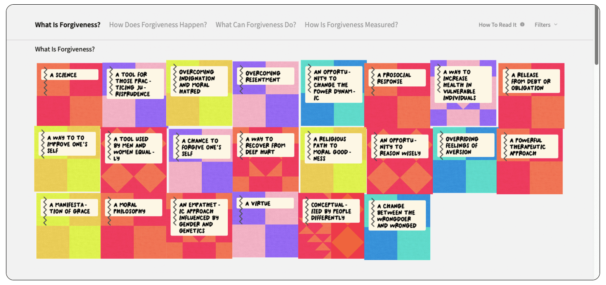
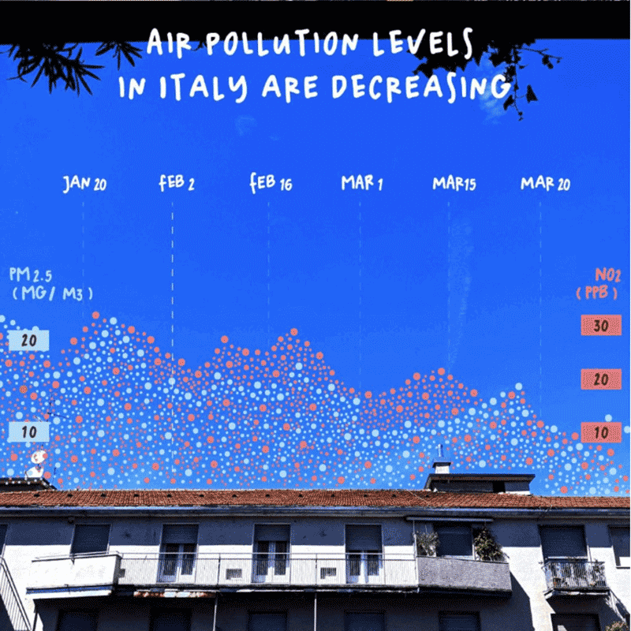
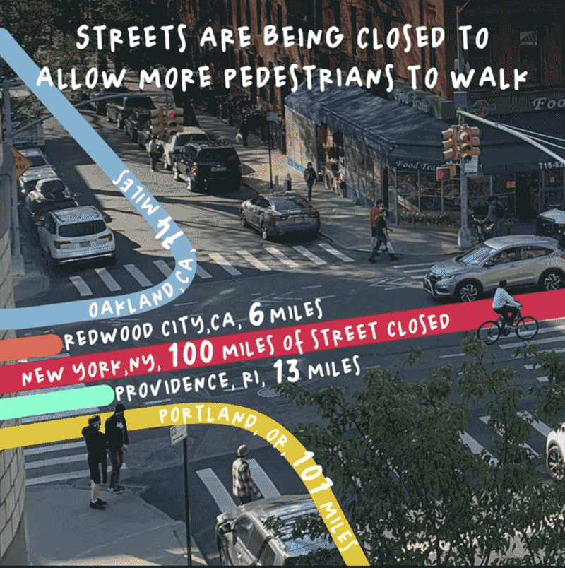

Aquí veremos dos personas destacadas en el rubro de las infografías. Uno de el siglo XX y otro del siglo XXI. Veremos un poco de su historia y 4 trabajos de cada uno.
JOHN GRIMWADE
Comenzó haciendo infografías en diarios, luego en revistas, libros y proyectos corporativos. Enseñó durante 7 años en la School of Visual Development en Nueva York, luego se mudó a Ohio para enseñar en la Universidad de Ohio en el School of Visual Communication por 5 años más. Ha trabajado en una serie de proyectos profesionales incluyendo ser director de consultoría gráfica de Eight by Eight, revista que ganó Society of Publication Design’s Magazine of the Year en 2015. Hoy enseña infografías en School of Visual Arts en Manhattan

Seguimiento de la salida de un vuelo desde JFK en Nueva York a Heathrow en Londres.

Información de diferentes trofeos de fútbol.

Historia y características del taxi británico.
Características de galerias de arte británicas.
GIORGIA LUPI
Diseñadora italiana de información. Ella reinterpreta la idea de infografía, a través del concepto de "humanismo en los datos". Es socia del estudio de diseño Pentagram y colabora con distintas firmas de moda y museos..

Información de trabajadores de la salud que fueron voluntarios durante la Pandemia.

¿Qué es perdonar? Del proyecto "Discover Forgiveness".

Nieveles de contaminación del aire en Italia.

Cierres de calles en Nueva York para permitir que peatones caminen.